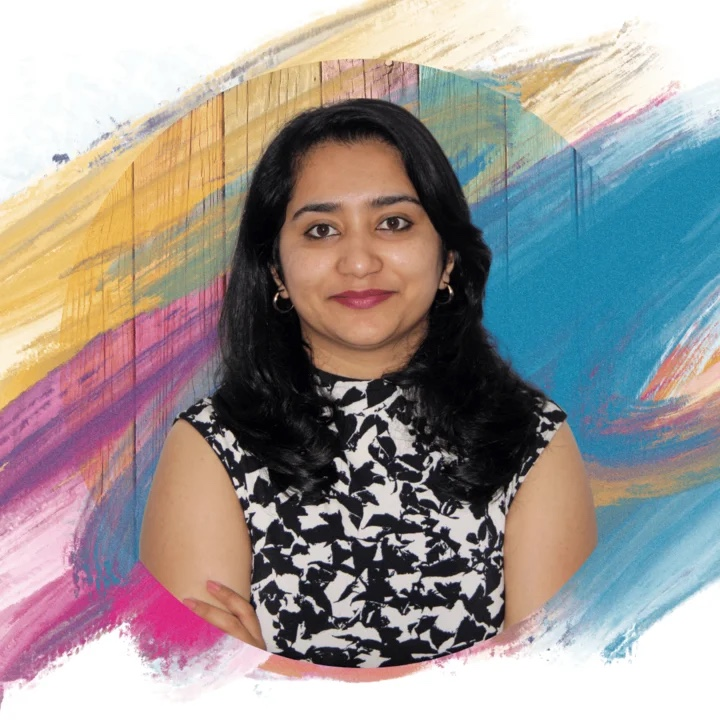

About · Aachen, Germany
About
I am a machine learning engineer with a PhD in computational physics. I build production AI for industrial systems in Aachen: physics-informed models, the pipelines behind them, and the LLM layer on top.
Seven years of computational modeling, the last three in production ML. EU Blue Card with full work authorization in Germany and France. English C1, German B1.
I also run Academia to Industry, because the path I took is badly mapped and I have walked it.

Journey
BSc Physics, minor in Mathematics and Computer Science, University of Calicut, Kerala
MSc Physics, Gandhigram Rural Institute, Tamil Nadu
Assistant Professor of Physics, Wayanad, Kerala, including one term as head of department
Research Assistant, Raman Research Institute, Bengaluru: numerical models in Python
PhD, computational physics, University of Cologne
Machine Learning Engineer and lead data scientist on two Omdena projects
Lecturer, Artificial Intelligence and Machine Learning, Hochschule Fresenius, Cologne
Applied AI Engineer and lead developer of PorosAI, ACCESS e.V., Aachen
Research and talks
Google Scholar-
Multi-Modal Investigation of Porosity in Aerospace Investment Casting: from Micrographs and CT-imaging via Simulation to AI Models
The full chain behind PorosAI's data: metallography and CT measurement, validated STAR-CCM+ and ProCAST simulation, and an AI surrogate that reproduces the measured porosity distributions.
-
Smart Casting: AI-powered Product Quality Optimization with Simulated Data
Shows that porosity surrogates can be trained on validated simulation data instead of scarce casting trials, answering in milliseconds instead of 45 minutes per simulation.
-
Diffusion-advection effects in photon-dissociation regions
How diffusion and advection change the chemistry of the regions where starlight meets molecular clouds.
-
Basel Data Science and AI Meetup
Physics-informed ML in manufacturing.
-
PorosAI at the European Investment Casters' Federation
PorosAI was presented at the 34th EICF conference in Seville.
-
Research proposals
Co-authored more than seven BMBF and EU research proposals, including consortium coordination. One was approved at EUR 16 million.
Off the clock
Astronomy on Tap, Cologne
In April 2020 a few of us at the University of Cologne founded the Cologne chapter of Astronomy on Tap: scientists explaining the universe to whoever is in the bar that night.
German, one verb at a time
I keep a public dataset of German verbs on GitHub, because B1 to B2 is a numbers game and I like to see the numbers.